Take the two bikes
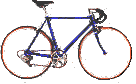
and strip 'em for everything (you may need some
specialized tools to do this)
so only the frames are left
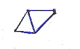
Now weld a part of the iron bar to one of the frames. Put
it where the front
fork used to be. That's what we did, but
maybe you can use the front fork
itself and spare the iron bar.
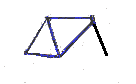
Weld the two frames together. Press the back part of the
foremost frame
together, so it touches the iron bar, and weld here:
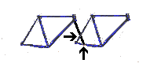
Now stiffen the construction by welding the rest of the
iron bar to the
bottom of your tandem (to connect the back
part of the foremost bike to the
iron bar, cut of a short
piece of the bar and weld it in between the axle and
the bar
(red arrow)). Weld here:
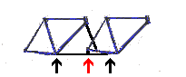
You have just completed the tandem frame. At this stage
our tandem looked like this (with the paint job almost done):
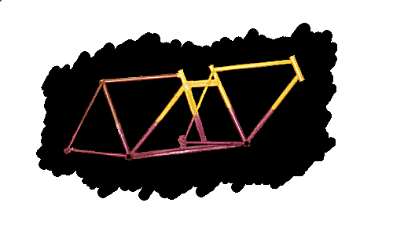
One last thing has to be welded. The handlebars for the back
passenger
should be static, so you should either weld the
handlebars to the frame (we
did) or make some other arangement
that serves this purpose.
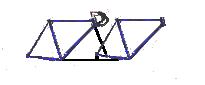
Now you'll have to put all the striped parts back onto
the bike. You shouldn't
have troubles with the following:
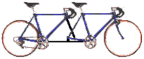
You see, this starts looking like a real $2,000 tandem  . Only a
. Only a
few things are missing: The
chain that goes from the front to the
back passenger, an extra derailleur to
secure the fron chain and the rear
brake. The latter shouldn't be a problem,
you just need an extra extra
long cable (this can be assembled of two normal
length break cables). To
connect the chains correctly, see the follwing
drawing (seen frome above):
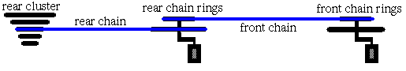
The innermost chain rings of the front and the rear
bike should be
of the same size, else you will be pedalling out of
phase, which will
make the tandem pretty unstable - not a good
idea. Assemble the extra
long front chain from
two (maybe more, depends on how much space there
is between the two frames)
normal chains (again, you may need som
specialized tools to do this). If you
have more tahn one chainrings on
the front bike,
you may remove those, that are not used. They serve
no purpose.
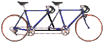
Now mount the derailleur that earlier was taken from the front
bike to the
iron bar (as shown in the picture below), so it tightens
the front chain:
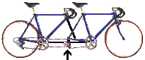
That wasn't so hard, was
it?